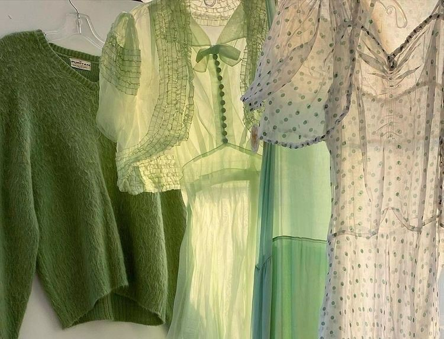
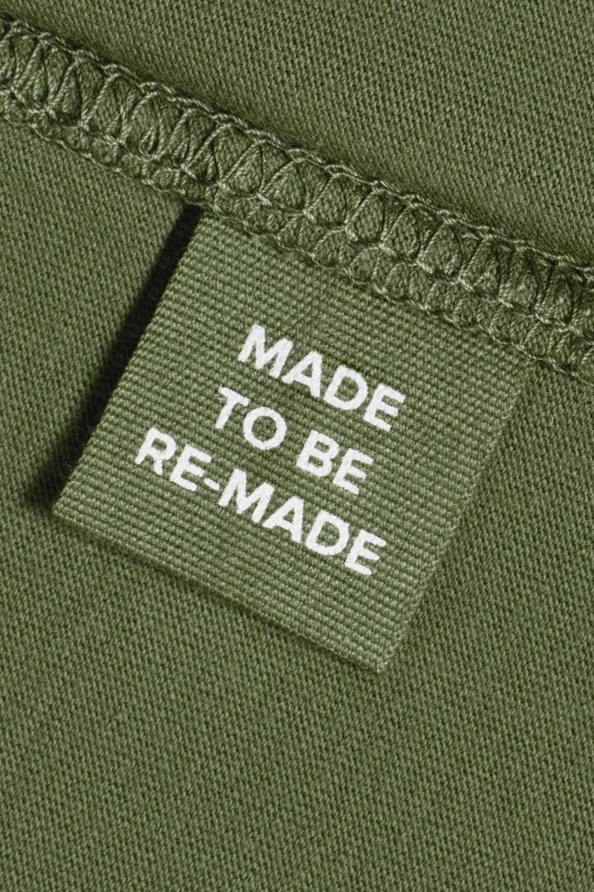

Brechó e Peças de Segunda Mão
Aumente o ciclo de vida das suas roupas através do reuso, troca e consumo consciente em brechós parceiros.
Te conectando à moda sustentável com autonomia e respeito à diversidade.

Aumente o ciclo de vida das suas roupas através do reuso, troca e consumo consciente em brechós parceiros.

Apoie artesãos, costureiras independentes e pequenas marcas que produzem com ética e sustentabilidade.

Descubra tecidos de baixo impacto, fibras orgânicas, corantes naturais e processos de upcycling.
Acompanhe notícias e artigos sobre sustentabilidade na moda, com dados e fontes indicadas.
Ler notícias recentesVeja imagens, vídeo e áudio sobre coleções, processos artesanais e peças que ganharam nova vida com o upcycling.
Ver a galeria Assistir e ouvirTire dúvidas, divulgue a sua marca ou proponha uma parceria. Nossa equipe responde pelo formulário de contato.
Ir para o formulárioEsta plataforma foi projetada para que todas as pessoas possam navegar com autonomia. Garantimos suporte integral a leitores de tela, navegação por teclado, contraste adequado e descrições detalhadas de imagem.
Encontrou alguma barreira de acessibilidade? Fale conosco diretamente através do nosso canal de suporte.
Enviar feedback de acessibilidade